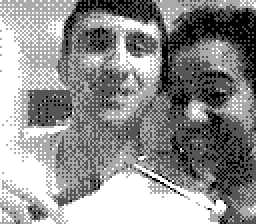

Blender Christmas Market Scene
2025-12-01
I am not sure whether I received my Game Boy Camera as a gift in '98, '99, or 2000, but I was completely obsessed with it and remain obsessed to this day. Every couple of years or so, I open it up, take a trip down memory lane, and snap a couple of photos, so I actually have a decent collection of selfies through the years.
I was worried about either losing it, or some internal battery dying and losing all of my photos, so I bought some gadget that lets me upload them to my PC. I just included five of them on the site here, but I have them all backed up on hard drives now. The Game Boy Camera might outlive those, though.../br>
Not only was having a digital camera very exciting to me as a 5-year-old, but the software had all kinds of weird, unexpected features and easter eggs. As a Pokemon-obsessed child, I was very happy with the ability to add Pokemon stickers to your pictures, for example.
There were little games you could play that would superimpose photos of your face over the characters, as well. The camera could swivel around, similar to how cell phones have both a front and back-facing camera. I think it took me years to figure out that was possible, though.
For as much fun as I got out of this thing, there are even a lot of features that I didn't use much, if at all. For example, there was a 'Game Boy Printer' accessory. There was also a music creator, which seemed really intense and high-tech to me as a little kid, so I was too scared to play much with it. Anyway, now that I've backed up my old photos, I can free up space to take some more, so maybe I'll make another blog post in 25 years to share my new pics. The last photo here is of Alanis and I with soldering tools to mod the Game Boy so we can see our photos better with a crispy back-lit screen.
